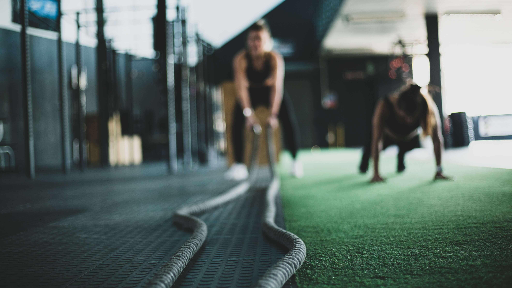
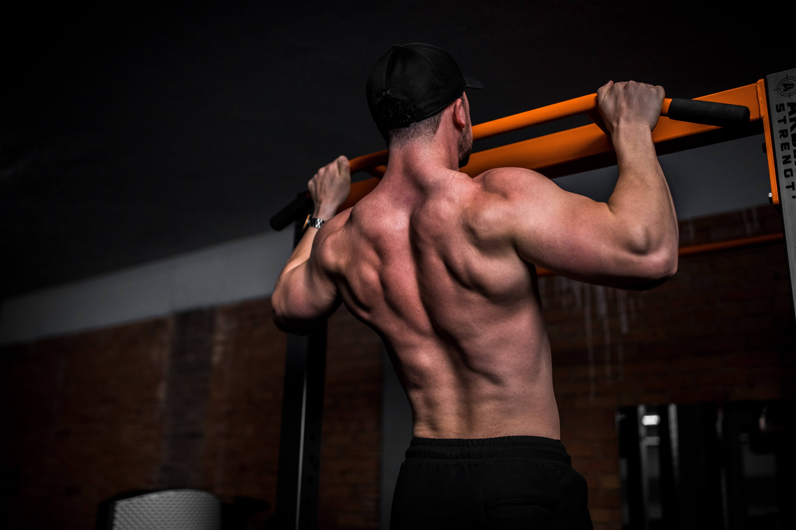

Physical: 100 flexes its muscles: How this 'wholesome' South Korean reality TV show became a global hit
29 Feb 2023
Entertainment

The first unscripted series to top Netflix's non-English chart built on the popularity of Single's Inferno, a Korean dating show that became a sleeper hit worldwide last year.
The challenge is straight from Greek mythology: Hold a boulder aloft as long as possible. Korean car dealer Jo Jin-hyeong lasted over two hours, captivating global audiences in a reality show that could signal a new K-culture export success.
After films such as Oscar-winning Parasite and TV series including Golden Globe-bedecked Squid Game helped popularise K-content overseas, industry figures have said South Korea's high-quality reality shows may be next in line for domination.
Physical: 100, the new Netflix show that gym buff Jo competed in, featured 100 men and women in prime physical condition, including South Korea's ex-Olympians and former special forces soldiers, performing absurdly difficult challenges.
It is the first unscripted series to top the streaming giant's non-English chart, building on the popularity of Single's Inferno, a Korean dating show that became a sleeper hit worldwide last year.

The show featured 100 contestants in prime physical condition
Part of the charm of such shows is the contestants: Jo, who started hitting the gym as a weedy teenager and has never been a professional athlete, found he could hold his own against some of South Korea's strongest people.
The 41-year-old won one of the show's most brutal contests, the Greek myth-inspired "Punishment of Atlas" challenge, where contestants had to lift and hold a boulder that bodybuilder contestant Kim Kang-min estimated was at least 50 kilograms.
Jo managed two hours and 14 minutes.
"When I lifted it I thought it was going to end in about 30 minutes," he told AFP, saying he kept telling himself: "hang in there for just 10 more minutes, then 10 more minutes..."
He came fourth overall in the show – an achievement he said was once unthinkable.
"I started exercising in middle school because I was too puny. I wanted to be stronger," he said, getting emotional when he thought of his younger self, who he thanked "for not giving up".
WHOLESOME AND AUTHENTIC
Over the last few years, South Korean content has taken the world by storm, with over 60 per cent of Netflix viewers watching a show from the East Asian country in 2022, company data showed.
Netflix, which spent more than 1 trillion won (S$1 billion) developing Korean content from 2015 to 2021, said it was expanding its South Korean reality show output this year.
"Korean non-fiction shows didn't travel before Netflix started taking them global," said Don Kang, the company's vice president of Korean content.
"There are some things we did to make shows more easily understandable to the global audience," he said, such as simplifying subtitles.

'Physical: 100' is the first unscripted series to top Netflix's non-English chart
Car dealer Jo said he thought the show was proving a hit abroad due to the genuine sense of camaraderie in South Korea's sports community.
"We cheered each other on in every contest, comforted each other when someone lost," he told AFP.
The "relative wholesomeness" of South Korean reality shows is a core part of their appeal to foreign audiences, said Regina Kim, an entertainment writer and expert on K-content based in New York City.
"It's like a breath of fresh air for American viewers who might be tired of watching reality stars hook up or fight all the time," she told AFP.
"There could definitely be more Korean reality shows that become popular overseas, including in the US," she said, pointing to successful Korean reality formats that have become global franchises.
"There are US remakes of Korean reality shows like The Masked Singer and I Can See Your Voice that have been super popular here," she said, referring to the hit South Korean music shows later produced in English by Fox.
GLOBAL FANS
Physical: 100 caused some controversy by pitting contestants of different genders against each other, prompting questions about whether it was fair. Ultimately, the top five contestants were men.
But Jang Eun-sil, one of 23 women competing in the show, told AFP she found the format "original and fresh", and that it helped to motivate her throughout the challenges.
"I just gave my best every moment, so I have no regrets and never thought it was unfair," said the 32-year-old wrestler, who was widely praised for the leadership she demonstrated on the show.
Although she didn't win, she said competing allowed her to bring her beloved sport to a broader audience.
"To be honest, wrestling is an unpopular sport in South Korea," she said, adding it was a "huge honour" that, thanks to her, more South Koreans had become aware that women wrestlers existed.
She's also seen an influx of global fans flooding her social media accounts. "I now plan to add English subtitles (to my YouTube channel)," she said.
Photography retrieved from Unsplash
Content retrieved from Channel News Asia (CNA Luxury)